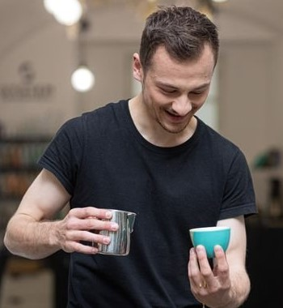

Patrik Šušlík
Programátor

Jmenuji se Patrik Šušlík. Pocházím z Bukové, to je malá vesnička v Rychlebských horách, ale nyní žiju v Ostravě.
Učím se programovat, a to hlavně v jazyce python, HTML, CSS a SQL. Tuto stránku budu používat jako mé portfolio projektů.

S HTML jsem začínal již na základní škole, kde jsem s kamarády spravoval školní, bulvární online magazín. Dlouhého trvání to však nemělo, a já spoustu věcí pozapomínal. Nyní na HTML opět pracuji a vytvářím na něm stránky pro mně i pro mé známé. Hlavním zdrojem informací my slouží IT network a samozřejmě google.

S pythonem jsem začínal na PyLadies kde jsem se naučil úplné základy. Aktuálně jsem účastníkem kurzu na udemy a zároveň na rekvalifikačním kurzu od ITnetwork.
Dále pracuji s gitem, snažím se komentovat veškeré změny stručně ale výstižně. Jako další technologie se kterými jsem pracoval bych zmínil SQL, Pandas a BeautifulSoup.